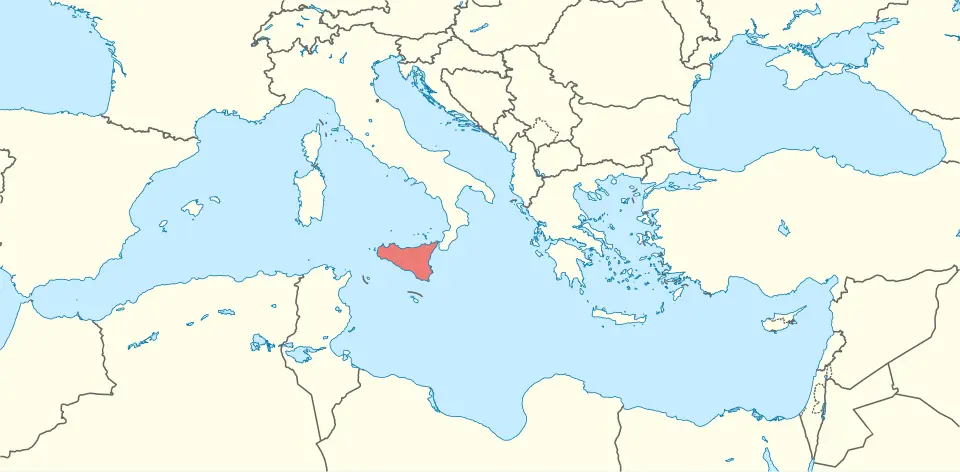
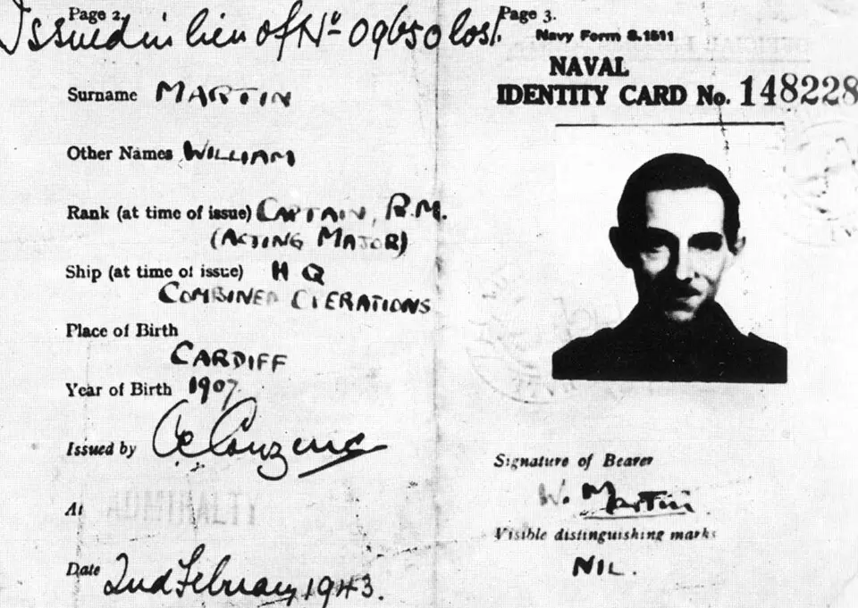
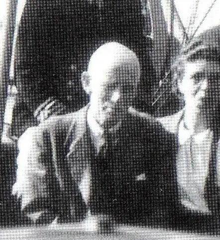
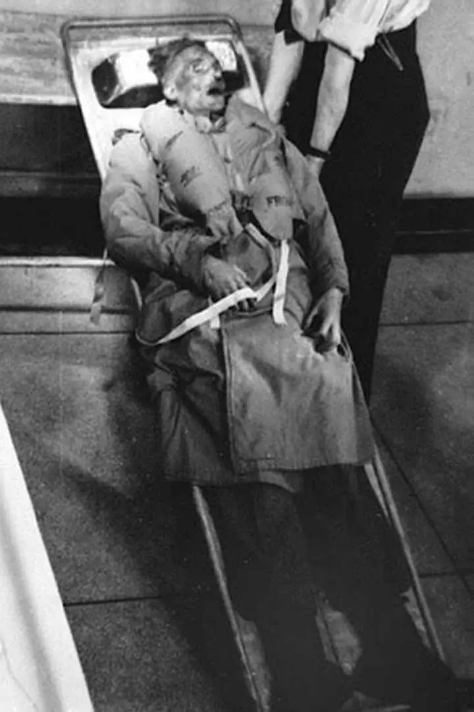

Chiến dịch Mincemeat: người chết đánh lừa Hitler
Một người đàn ông vô gia cư chết vì thuốc diệt chuột trở thành "Thiếu tá William Martin", và đánh lừa được Hitler.

Ngày 28/1/1943, một người đàn ông xứ Wales tên Glyndwr Michael, 34 tuổi, vô gia cư, qua đời ở bệnh viện St Pancras, London, sau khi nuốt phải thuốc diệt chuột chứa phốt pho. Không ai đến nhận xác. Ba tháng sau, ông nằm dưới đáy một tàu ngầm Anh, mặc quân phục thiếu tá, với một chiếc cặp xích vào cổ tay. Ông sắp trở thành điệp viên thành công nhất của Thế chiến II.
Bài toán Sicilia
Đầu năm 1943, quân Đồng minh vừa thắng ở Bắc Phi và chuẩn bị đánh vào châu Âu. Mục tiêu là Sicilia. Rắc rối là ai nhìn bản đồ cũng đoán ra. Theo một câu được cho là của Churchill, "chỉ có kẻ ngốc mới không biết đó là Sicilia".
Tình báo Anh cần làm cho Đức tin vào điều ngược lại. Ý tưởng đã có sẵn: năm 1939, một bản ghi nhớ của Cục Tình báo Hải quân, nay gọi là "bản ghi nhớ Cá hồi", liệt kê các mưu kế lừa địch. Mục số 28 đề xuất thả xuống biển một thi thể mang tài liệu giả. Người được cho là soạn bản ghi nhớ là trợ lý của đô đốc, Ian Fleming, sau này là tác giả truyện James Bond. Còn thiếu một thi thể, và một con người để nó đóng vai.
Dựng nên một con người


Hai sĩ quan Ewen Montagu và Charles Cholmondeley được giao thực hiện. Với sự giúp đỡ của nhân viên điều tra pháp y Bentley Purchase, họ có được thi thể của Glyndwr Michael. Phốt pho để lại ít dấu vết, nên một người chết đuối ngoài biển là lời giải thích hợp lý.
Họ tạo ra Thiếu tá William Martin, Thủy quân lục chiến Hoàng gia, đến từng chi tiết nhỏ. Trong túi ông có ảnh vị hôn thê "Pam" (thật ra là ảnh của Jean Leslie, một nhân viên MI5), hai lá thư tình, hóa đơn mua nhẫn đính hôn, cuống vé xem kịch ngày 22/4, và một lá thư của ngân hàng Lloyds nhắc ông đang nợ thấu chi 79 bảng. Montagu và Cholmondeley còn mang thẻ của Martin trong người nhiều ngày cho cũ đi.
Thứ quan trọng nằm trong cặp: một lá thư riêng của trung tướng Archibald Nye gửi tướng Harold Alexander, bàn chuyện đổ bộ Hy Lạp, và nhắc Sicilia chỉ như mục tiêu nghi binh. Giờ chỉ còn việc đưa ông đến đúng chỗ, trước mắt đúng người.
Montagu gửi điện cho Churchill: "Mincemeat đã nuốt trọn cả cần, dây và chì."
Bãi biển Huelva


Thi thể được đặt trong một hộp thép chứa đá khô, đưa lên tàu ngầm HMS Seraph. Rạng sáng 30/4/1943, ngoài khơi Huelva, Tây Ban Nha, trung úy Bill Jewell và vài sĩ quan đọc Thánh vịnh 39, rồi thả thi thể trôi vào bờ. Họ chọn Huelva vì biết ở đó có Adolf Clauss, một điệp viên Đức làm việc rất hăng hái.
Một ngư dân Tây Ban Nha vớt được xác. Tây Ban Nha trung lập nhưng thân Đức. Thư từ được mở ra, chụp lại, rồi gấp vào như cũ trước khi trả lại cho Anh. Khi kiểm tra, người Anh thấy dấu hiệu thư đã bị mở. Montagu gửi điện cho Churchill: "Mincemeat đã nuốt trọn cả cần, dây và chì." Câu hỏi còn lại là Hitler có tin hay không.
Kết quả, và người được nhớ tên


Hitler tin. Đức tăng cường phòng thủ Hy Lạp và Sardinia; một sư đoàn thiết giáp được điều từ Pháp sang Hy Lạp. Ngày 10/7/1943, quân Đồng minh đổ bộ Sicilia, và phòng tuyến yếu hơn dự kiến. Mức độ chính xác của tác động vẫn được các sử gia bàn cãi, nhưng hầu hết đồng ý rằng mưu kế đã làm Đức phân tán lực lượng.
Thiếu tá Martin được chôn với đầy đủ nghi lễ quân đội ở nghĩa trang Nuestra Señora de la Soledad, Huelva. Suốt hơn nửa thế kỷ, bia mộ mang tên một người không có thật. Năm 1998, chính phủ Anh cho khắc thêm một dòng: Glyndwr Michael đã phục vụ với tư cách Thiếu tá William Martin. Người đàn ông không ai đến nhận xác, cuối cùng có tên trên bia của mình.